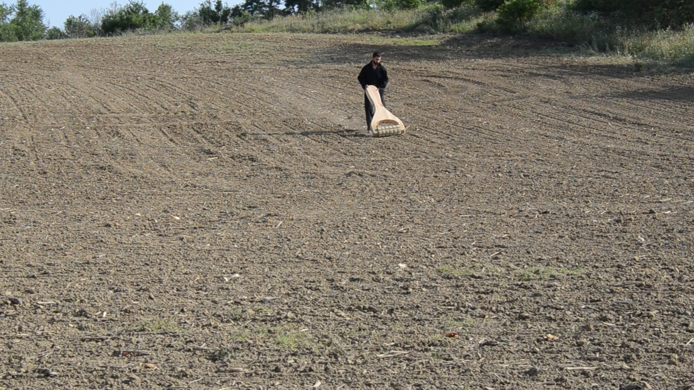
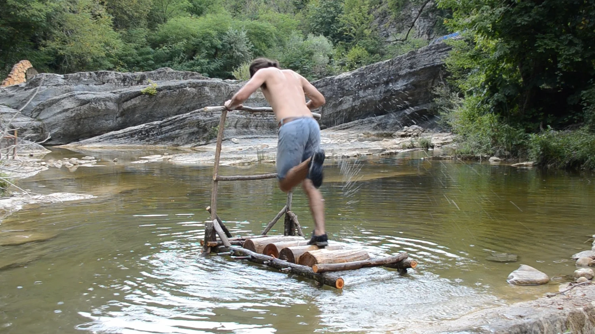
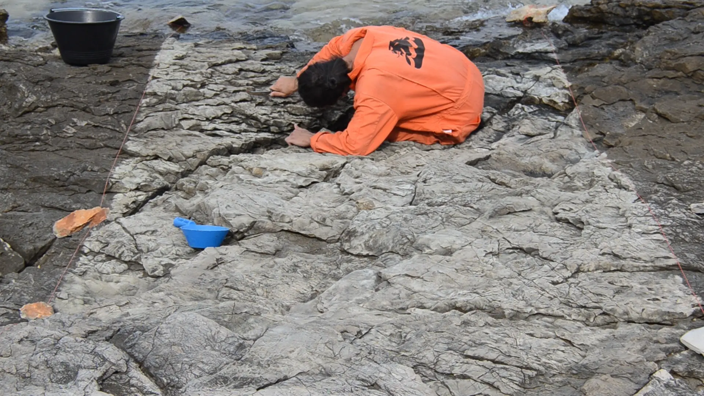
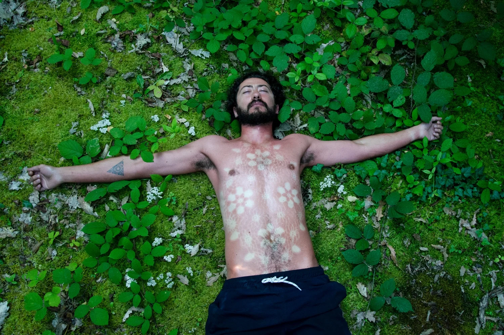
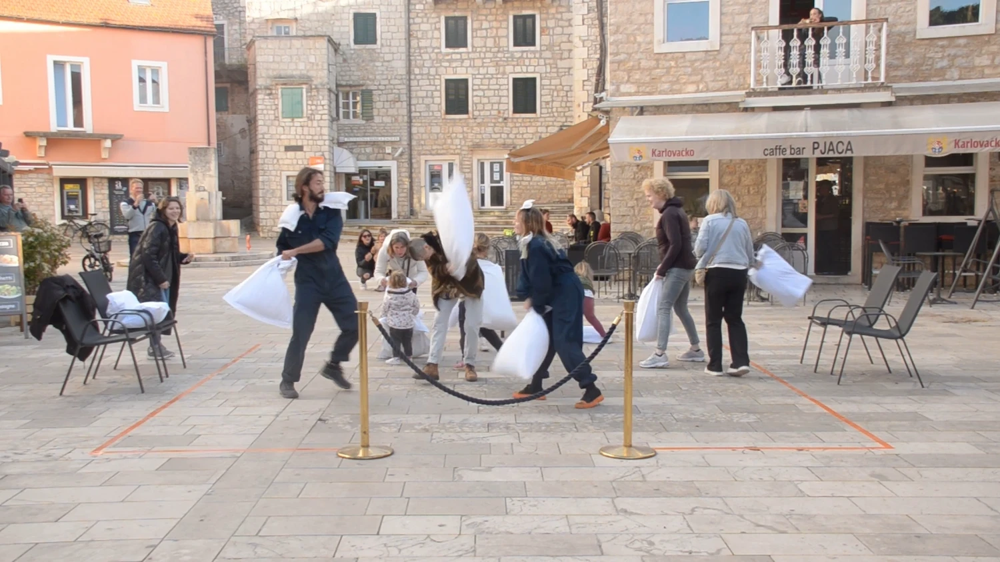
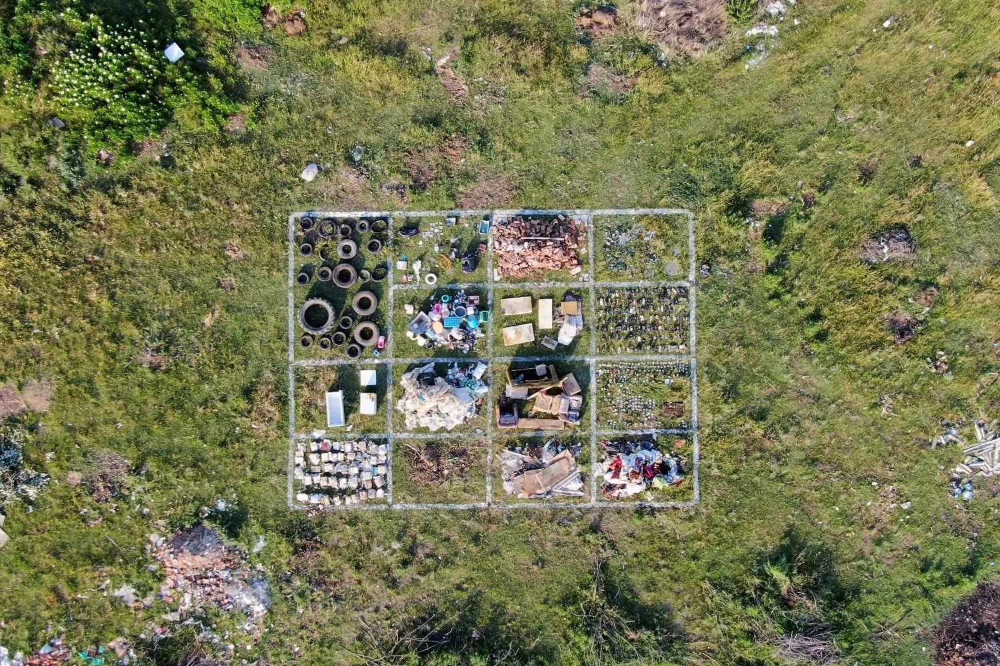

Selected Works

Do you really self-care?
Self-care is a video performance project of landscape interventions in which the artist interacts with nature through augmented self-care tools. Back scratcher, scalp soother or body and foot massager; tools with which we take care for ourselves or our loved ones…

Treadmill Series
The Treadmill series is an ongoing series of video actions in which Mihov confronts his surroundings through interventions involving a treadmill-like object. These performances depict a surreal and absurd interaction with the landscape…

Tourists go home - Tourists come back
Tourists go home – Tourists come back is a video series by Kalin Mihov, exploring the relationship between locals and tourists. A love-hate relationship that reminds the artist of the margarita game - he loves me, he loves me not - tourists go home, tourists come back...

I am the wild strawberry meadow
I am the wild strawberry meadow examines man's relationship with the passing of time through melancholy, surrendering to time and accepting its scars, reconciliation and the inevitable reckoning.

Riverman
Riverman – an act in which Kalin Mihov dedicatedly repeats the simple act of hardly rubbing a dense stone into another larger, softer sandstone every day in the span of a week, until it leaves a significant mark on the surface and body of the second

Pillow Work
Marike Leene and Kalin Mihov organized a five-day event to mark the end of their joint residency at Jelsa Art Hub. The event included a series of happenings, performative acts and temporary installations that engaged the local community.

Dump-yard Inventory
Dump yard Inventory systematizes pictorial compositions of various materials, textures and colors, created on the site of an unregulated landfill near the village of Gorno Pestene, Bulgaria.